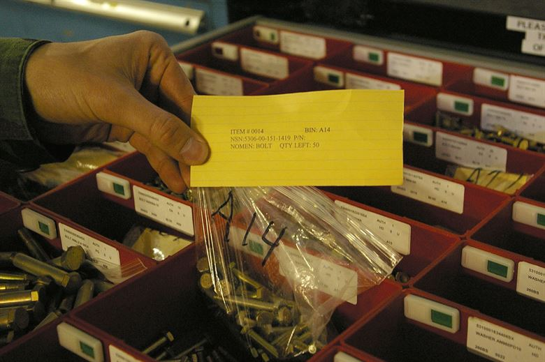

Kanban
Gergő Pintér, PhD
gergo.pinter@uni-corvinus.hu
what is kanban?
Kanban is a strategy for optimizing the flow of value through a
process that uses a visual, pull-based system
principles of kanban
- defining and visualizing a workflow
- actively managing items in a workflow
- improving a workflow
defining and visualizing the workflow
- definition of workflow (DoW)
- the visualization of the DoW is called a Kanban board
- states (columns)
- conditions when to move an item between columns
- a definition of the individual units of value that are moving
through the workflow
- referred to as work items (or items)
defining and visualizing the workflow
- a definition for when work items are started and finished within the
workflow
- a workflow may have more than one started or finished points
defining and visualizing the workflow
- one or more defined states between the started to finished
- item between start and finish point are considered work in progress
(WIP)
- a definition of how WIP will be controlled from started to
finished
- explicit policies about how work items can flow through each
state
Service Level Expectation
- a service level expectation (SLE)
- which is a forecast of how long it should take a
work item to flow from started to finished
- the SLE itself has two parts: a period of elapsed time and a
probability associated with that period
- e.g., 85% of work items will be finished in eight days or less
Service Level Expectation
- the SLE should be based on historical cycle time
- and once calculated, should be visualized on the Kanban board
- if historical cycle time data does not exist, a best guess will do
until there is enough historical data
improving the Workflow
- it is common practice to review the DoW from time to time to discuss
and implement any changes needed
- e.g., need a new column for a new state
- not necessary to wait for a formal meeting at a regular cadence to
make these changes
kanban measures
- WIP: number of work items started but not finished
- throughput: number of work items finished per unit of time
- Note the measurement of throughput is the exact count of work
items
- work item age: elapsed time from when a work item started
- cycle time: time between when a work item started and finished
Toyota’s six rules [1]
- Each process issues requests (kanban) to its suppliers when it
consumes its supplies.
- Each process produces according to the quantity and sequence of
incoming requests.
- No items are made or transported without a request.
- The request associated with an item is always attached to it.
- Processes must not send out defective items, to ensure that the
finished products will be defect-free.
- Limiting the number of pending requests makes the process more
sensitive and reveals inefficiencies.

Kanban card together with the bag of
bolts
scrumban
Scrum contributes to scrumban:
- sprints
- daily standups
- retrospectives
Kanban contributes to scrumban:
- board
- cards
- work-in-progress limits